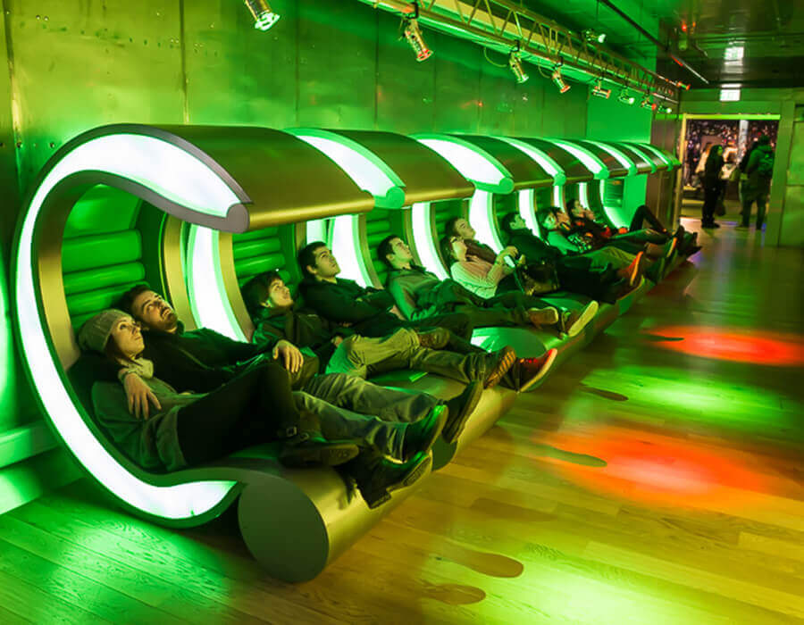
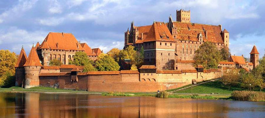

Bem-vindo aos meus mapas, onde registrei um local que gostaria de conhecer e mais 2 locais que meus amigos gostariam de conhecer.
Ainda que você não se hospede em algum consagrado resort de esqui de Banff, estar numa paisagem cinematográfica, como Lake Louise, por apenas um dia já vale a visita.

Cerveja né amores

Veja mais: visitmalbork.pl